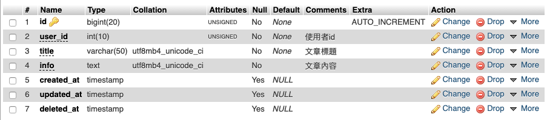
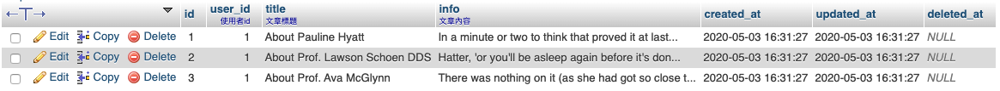
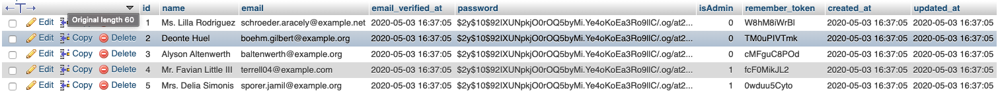

<!DOCTYPE html>
<html lang="zh-tw">
    
<head>
    <meta charset="UTF-8">
    <meta name="viewport" content="width=device-width, initial-scale=1">
    <meta name="generator" content="Yee的補坑筆記">
    <title>Laravel之旅 - 善用Migration管理資料表 - Yee的補坑筆記</title>
    <meta name="author" content="Yee">
    
        <meta name="keywords" content="laravel,docker,">
    
    
    
    <script type="application/ld+json">{"@context":"http://schema.org","@type":"BlogPosting","author":{"@type":"Person","name":"Yee","sameAs":["mailto:amung966w@gmail.com"],"image":"yee.jpeg"},"articleBody":"本週來聊聊migration這個東西吧～ \n\n本來想想先寫Controller的，\n後來想一想…\n再寫一個系統時，會先將資料庫建置好，\n因此先來聊聊Database這個資料夾裡可以做哪些事情～\n\n本文所採用的環境\b\n\nMax OSX 10.15\nDocker version 19.03.5\nLaradock\nLaravel 6.0 以上 (5.8適用)\n\n本系列不從部署環境開始說起，\n部署環境可參考以下\n\nLaradock - 更快速優雅的建立Laravel\nInstall Apache, MySQL, PHP on macOS Catalina 10.15\nWin10請服用XAMPP，非專業版的Win裝docker會比較麻煩，不過也可以試試～～\n\n\nDatabase這個資料夾中，\n預設會有三個資料夾，分別為 factories、migrations、seeds，\n這三個的功用為 設計假資料、DB Schema、匯入假資料，\n我們先來說說 factories 吧！\nfactories 假資料製造工廠官方很貼心的建立一個UserFactory.php在資料夾中，\n讓我們來仔細觀察一下這個檔案\n123456789101112131415161718// 要生成假資料的modeluse App\\User;// 引入facker與str函式use Faker\\Generator as Faker;use Illuminate\\Support\\Str;// 他呼叫了 User 這個 model，可以先看一下 app/User.php裡寫了什麼$factory-&gt;define(User::class, function (Faker $faker) &#123;    return [        // 用fake產生一個假的名字        'name' =&gt; $faker-&gt;name,        // 用faker產生一組email        'email' =&gt; $faker-&gt;unique()-&gt;safeEmail,        // 除了用faker，也可以呼叫helper、字串、數值...等        'email_verified_at' =&gt; now(),        'password' =&gt; '$2y$10$92IXUNpkjO0rOQ5byMi.Ye4oKoEa3Ro9llC/.og/at2.uheWG/igi', // password        'remember_token' =&gt; Str::random(10),    ];&#125;);\n這是比較簡單使用的範例，\nfactory 除了 define as 還有 state，\n因為某些資料表會有狀態的變化，因此laravel也有提供這個方法，讓我們可以產生出對應的假資料，\n123456// 如果是amdin該欄位會是1$factory-&gt;state(App\\User::class, 'admin', [    // isAdmin欄位預設為0，需到migration設定    'isAdmin' =&gt; 1',]);// 到seed的地方會介紹如何使用factory state\n\n觀察完這個檔案後，該如何加入一個新的factory呢！？\n121. 複製大法 ((cp UserFactory.php PostFactory.php2. 指令建立 php artisan make:factory PostFactory\n還是建議各位用2少用一點1，雖然趕時間的時候可以加快，\n但容易遺漏舊的內容在裡面，有bug的話也會無限複製下去。\n指令下完後，就會出現 PostFactory.php在/database/factories/裡了，\n讓我們稍微做一個文章資料表的假資料吧！\n12345678910use App\\Post;use Faker\\Generator as Faker;$factory-&gt;define(Post::class, function (Faker $faker) &#123;    return [        'user_id' =&gt; 1,        'title' =&gt; 'About '.$faker-&gt;name,        'info' =&gt; $faker-&gt;realText    ];&#125;);\n\n以上就是假資料製造的方法，製假資料就是這麼簡單，\n更詳細的faker函式請左轉facker的github想看更完整解釋factory的話請右轉Laravel-Writing Factories\n只要在這裡定義好一筆資料的內容格式，待會再seeds中就可以跟它說要製造幾筆…等功能。\n\nmigrations 資料庫遷移這裡主要都是放DB schema，再透過指令執行，就可以快速生成一個DB，\n通常公司的案子幾乎都已經建立好DB，不需要在這裡一一建立，\n當遇到新專案的時候，很建議可以在這裡做一份DB schema，\n因為\n\n寫test時會用到\n不用擔心忘了備份資料庫 ((通常是不會拉，這很重要\n新的開發人員可以快速建置專案\n不需要將db.sql檔案傳來傳去的，migration也可以做到版本控制\n\n有了這些好處，是不是該做一份schema在這裡了呢！？\n但… 有人會說，\n現有專案該怎麼辦，該不會要一一建立，\n其實不用，\nMysql Workbanch有外掛可以用，下一章就來講一下該如何使這個外掛。\n先回到我們的 migration，\n一樣laravel提供了三張table的schema，\n讓我們來觀察一下2014_10_12_000000_create_users_table.php，\n123456789101112131415161718192021222324252627282930313233// 引入 laravel的migration跟其他相關的codeuse Illuminate\\Database\\Migrations\\Migration;use Illuminate\\Database\\Schema\\Blueprint;use Illuminate\\Support\\Facades\\Schema;// 他是繼承Migration// 好奇的話也可以將 Illuminate\\Database\\Migrations\\Migration打開來觀察class CreateUsersTable extends Migration&#123;    public function up()    &#123;        // table name, 生成schema的function        Schema::create('users', function (Blueprint $table) &#123;            // bigIncrements就是primary key + 流水號            $table-&gt;bigIncrements('id');            // string 則生成 varchar            // 如果要限制長度的話基本上都是 type('columns name', 'limit length')            // ex. $table-&gt;string('name', 10); 長度10的文字            $table-&gt;string('name');            // unique() 表示該欄為唯一值            $table-&gt;string('email')-&gt;unique();            // nullable() 表示該欄位允許空值null            $table-&gt;timestamp('email_verified_at')-&gt;nullable();            $table-&gt;string('password');            // default() 表示預設值            $table-&gt;unsignedTinyInteger('isAdmin')-&gt;default(0);            // laravel的rememberToken欄位            $table-&gt;rememberToken();            // 會自動建立時間戳記 created_at 和 updated_at，用途在Model章節再說明            $table-&gt;timestamps();        &#125;);    &#125;&#125;\n\n觀察完這個檔案後，一樣來建立一個文章資料表的schema吧！\n12&#x2F;&#x2F; 建立migrationphp artisan make:migration post\n執行後就會得到一個檔名為 YYYY_MM_DD_timestamp_post.php\n讓我們來完成它吧\n123456789101112131415161718public function up()&#123;    Schema::create('posts', function (Blueprint $table) &#123;        // 流水號        $table-&gt;bigIncrements('id');        // 使用者id        // comment() 欄位的註解        $table-&gt;unsignedInteger('user_id')-&gt;comment('使用者id');        // 文章標題，限50字        $table-&gt;string('title', 50)-&gt;comment('文章標題');        // 文章內容        $table-&gt;text('info')-&gt;comment('文章內容');        // 時間戳記        $table-&gt;timestamps();        // 刪除資料的時間戳記，用該欄位是否為null判斷文章是否被刪除        $table-&gt;softDeletes();    &#125;);&#125;\n就這樣，我們可以建立一張table的schema，\n接下來就可以來匯入schema拉～\n123456789101112&#x2F;&#x2F; 執行匯入資料庫&#x2F;&#x2F; 若遇到權限不足的問題，在前面加上sudo就可以，但建議查一下為什麼權限不足php artisan migrate&#x2F;&#x2F; 清空資料庫php artisan migrate:reset&#x2F;&#x2F; 回到上一個版本php artisan migrate:rollback&#x2F;&#x2F; 清空再寫入php artisan migrate:fresh\n匯入完成後打開資料庫就可以看到\n更詳細的欄位使用方式請看者裡Laravel-Migrations\n\nSeeds 匯入假資料當我們建立好table和假資料工廠後，就可以來匯入假資料拉～～\n當然，laravel預設也是給了DatabaseSeeder.php這個檔案，\n裡頭居然是註解！！！\n沒關係，看一下官方文件就可以自己寫一個簡單的匯入，\n1234567891011121314151617181920212223242526use Illuminate\\Database\\Seeder;class DatabaseSeeder extends Seeder&#123;    use App\\User;    use App\\Post;    /**     * Seed the application's database.     *     * @return void     */    public function run()    &#123;        // 這行的用意在於，官方建議我們建立每一張table的seeder，然後放到這裡來統一執行，否則指令就得一直下        // $this-&gt;call(UsersTableSeeder::class);        // 不過為了方便我們就直接在這裡寫使用factory        // 生成User table的假資料三筆        factory(User::class, 3)-&gt;create();        // 生成User table的假資料兩筆，且isAdmin=1        factory(User::class, 2)-&gt;states('admin')-&gt;create();        // 生成Post table的假資料        // 假設已經建立一個Post.php的Model        factory(Post::class, 3)-&gt;create();    &#125;&#125;\n這裡小說明一下，若想用一個欄位存 0,1,2…等來分辨資料類型，就必須分開使用states，\nex. \n1factory(App\\User::class, 3)-&gt;states('admin', 'user', 'member')-&gt;create();\n若這樣寫，最後該欄位都會是member state的值！！！\n123factory(User::class, 2)-&gt;states('admin')-&gt;create();factory(User::class, 3)-&gt;states('user')-&gt;create();factory(User::class, 4)-&gt;states('member')-&gt;create();\n用這樣就不會造成state被覆蓋的問題！！！\n當初看到state以為可以states(‘admin’, ‘user’, ‘member’)，\n弄了半天資料一直都是最後的state，\n後來才發現不能這樣寫，或許有辦法可以做到不需要寫三次… \n把上面的方法寫完後，我們就可以開始匯入拉～\n12345&#x2F;&#x2F; 建立seederphp artisan make:seeder ModelTableSeeder&#x2F;&#x2F; 執行匯入php artisan db:seed --class&#x3D;DatabaseSeeder\n匯入完成後就可以看到DB有資料了～posts tableusers table\n更完整的方法就在Laravel-Seeding\n\n以上是Laravel建立資料庫與假資料的方法，\n其實也不一定要用到factory，\n如果資料型態比較特殊的話，也可以在Seeder裡用 DB::table()-&gt;insert() 的方法\n12345678910// 這裡用到Carbon套件來使用時間相關的函式DB::table('posts')-&gt;insert([    ['user_id' =&gt; 1 ,'title' =&gt; 'About post title', 'info' =&gt; 'post content',         'created_at'=&gt;Carbon::now() ,'updated_at'=&gt;Carbon::now() ,'deleted_at' =&gt; null    ],    // factory 就比較難隨機產生 user_id 這欄，所以剛剛那都填user_id=1    ['user_id' =&gt; 2 ,'title' =&gt; 'About post title2', 'info' =&gt; 'post content2',         'created_at'=&gt;Carbon::now() ,'updated_at'=&gt;Carbon::now(), 'deleted_at' =&gt; null    ],]);\n以上的方法等同於 factory(Post::class, 2)-&gt;create(); ，\n沒有人說Seed一定要怎麼用，\n怎麼用才會比較方便而是由自己決定的！！！\n對於我來說，我會選擇 DB::table()-&gt;insert() 的方式，\n因為有些資料表可以先做好預設值，\n例如：開發者帳號、商品單位…等，這些屬於要先做好的資料。\n\n後記\n剛開始學Laravel的時候，都是到phpmyadmin開好資料表，\n然後到\b在匯出放到專案資料夾底下做git版控，\n但要分享給別人開發之後，就會有忘記將自己版本弄下來的情況，\n後來了解到這塊，在日後的分工也不用擔心資料庫忘了給或給錯版本，\n而且當系統測試到資料髒亂時，也可以很快的還原出一個乾淨的版本。\n","dateCreated":"2020-04-25T21:11:35+08:00","dateModified":"2020-05-04T00:56:51+08:00","datePublished":"2020-04-25T21:11:35+08:00","description":"本週來聊聊migration這個東西吧～ ","headline":"Laravel之旅 - 善用Migration管理資料表","image":[],"mainEntityOfPage":{"@type":"WebPage","@id":"https://yeeinhole.github.io/2020/04/25/laravel-2/"},"publisher":{"@type":"Organization","name":"Yee","sameAs":["mailto:amung966w@gmail.com"],"image":"yee.jpeg","logo":{"@type":"ImageObject","url":"yee.jpeg"}},"url":"https://yeeinhole.github.io/2020/04/25/laravel-2/","keywords":"laravel, w3HexSchool"}</script>
    <meta name="description" content="本週來聊聊migration這個東西吧～">
<meta property="og:type" content="blog">
<meta property="og:title" content="Laravel之旅 - 善用Migration管理資料表">
<meta property="og:url" content="https://yeeinhole.github.io/2020/04/25/laravel-2/index.html">
<meta property="og:site_name" content="Yee的補坑筆記">
<meta property="og:description" content="本週來聊聊migration這個東西吧～">
<meta property="og:locale" content="zh_TW">
<meta property="og:image" content="https://yeeinhole.github.io/image/laravel-2/db1.png">
<meta property="og:image" content="https://yeeinhole.github.io/image/laravel-2/db2.png">
<meta property="og:image" content="https://yeeinhole.github.io/image/laravel-2/db3.png">
<meta property="article:published_time" content="2020-04-25T13:11:35.000Z">
<meta property="article:modified_time" content="2020-05-03T16:56:51.166Z">
<meta property="article:author" content="Yee">
<meta property="article:tag" content="laravel">
<meta property="article:tag" content="w3HexSchool">
<meta name="twitter:card" content="summary">
<meta name="twitter:image" content="https://yeeinhole.github.io/image/laravel-2/db1.png">
    
    
        
    
    
        <meta property="og:image" content="https://yeeinhole.github.io/assets/images/yee.jpeg"/>
    
    
    
    
    <!--STYLES-->
    
<link rel="stylesheet" href="/assets/css/style-2lqfypdcngq7rgk11flmhgs30biseha2s4rv2frat5edalqervoqqqtncnuh.min.css">

    <!--STYLES END-->
    

    

    
        
    
</head>

    <body>
        <div id="blog">
            <!-- Define author's picture -->


    
        
            
        
    

<header id="header" data-behavior="4">
    <i id="btn-open-sidebar" class="fa fa-lg fa-bars"></i>
    <div class="header-title">
        <a
            class="header-title-link"
            href="/"
            aria-label=""
        >
            Yee的補坑筆記
        </a>
    </div>
    
        
            <a
                class="header-right-picture "
                href="#about"
                aria-label="打開鏈接: /#about"
            >
        
        
            
        
        </a>
    
</header>

            <!-- Define author's picture -->


        
    

<nav id="sidebar" data-behavior="4">
    <div class="sidebar-container">
        
            <div class="sidebar-profile">
                <a
                    href="/#about"
                    aria-label="閱讀有關作者的更多信息"
                >
                    
                </a>
                <h4 class="sidebar-profile-name">Yee</h4>
                
                    <h5 class="sidebar-profile-bio"><p>Hi 我是 Yee，常常不小心就掉進坑中…</p>
</h5>
                
            </div>
        
        
            <ul class="sidebar-buttons">
            
                <li class="sidebar-button">
                    
                        <a  class="sidebar-button-link "
                             href="https://yeeinhole.github.io/"
                            title="首頁"
                        >
                    
                        <i class="sidebar-button-icon fa fa-home" aria-hidden="true"></i>
                        <span class="sidebar-button-desc">首頁</span>
                    </a>
            </li>
            
                <li class="sidebar-button">
                    
                        <a  class="sidebar-button-link "
                             href="/all-categories"
                            
                            title="分類"
                        >
                    
                        <i class="sidebar-button-icon fa fa-bookmark" aria-hidden="true"></i>
                        <span class="sidebar-button-desc">分類</span>
                    </a>
            </li>
            
                <li class="sidebar-button">
                    
                        <a  class="sidebar-button-link "
                             href="/all-tags"
                            
                            title="標籤"
                        >
                    
                        <i class="sidebar-button-icon fa fa-tags" aria-hidden="true"></i>
                        <span class="sidebar-button-desc">標籤</span>
                    </a>
            </li>
            
                <li class="sidebar-button">
                    
                        <a  class="sidebar-button-link "
                             href="/all-archives"
                            
                            title="所有文章"
                        >
                    
                        <i class="sidebar-button-icon fa fa-archive" aria-hidden="true"></i>
                        <span class="sidebar-button-desc">所有文章</span>
                    </a>
            </li>
            
                <li class="sidebar-button">
                    
                        <a  class="sidebar-button-link "
                             href="/friend"
                            
                            title="友情連結"
                        >
                    
                        <i class="sidebar-button-icon fas fa-link" aria-hidden="true"></i>
                        <span class="sidebar-button-desc">友情連結</span>
                    </a>
            </li>
            
                <li class="sidebar-button">
                    
                        <a  class="sidebar-button-link "
                             href="#about"
                            
                            title="關於"
                        >
                    
                        <i class="sidebar-button-icon fa fa-question" aria-hidden="true"></i>
                        <span class="sidebar-button-desc">關於</span>
                    </a>
            </li>
            
        </ul>
        
            <ul class="sidebar-buttons">
            
                <li class="sidebar-button">
                    
                        <a  class="sidebar-button-link " href="mailto:amung966w@gmail.com" target="_blank" rel="noopener" title="Email">
                    
                        <i class="sidebar-button-icon fa fa-envelope" aria-hidden="true"></i>
                        <span class="sidebar-button-desc">Email</span>
                    </a>
            </li>
            
        </ul>
        
    </div>
</nav>

            
            <div id="main" data-behavior="4"
                 class="
                        hasCoverMetaIn
                        ">
                
<article class="post">
    
    
        <div class="post-header main-content-wrap text-left">
    
        <h1 class="post-title">
            Laravel之旅 - 善用Migration管理資料表
        </h1>
    
    
        <div class="post-meta">
    <time datetime="2020-04-25T21:11:35+08:00">
	
		    4月 25, 2020
    	
    </time>
    
        <span>分類 </span>
        
    <a class="category-link" href="/categories/Laravel/">Laravel</a>


    
</div>

    
</div>

    
    <div class="post-content markdown">
        <div class="main-content-wrap">
            <p>本週來聊聊migration這個東西吧～ </p>
<a id="more"></a>
<p>本來想想先寫Controller的，</p>
<p>後來想一想…</p>
<p>再寫一個系統時，會先將資料庫建置好，</p>
<p>因此先來聊聊Database這個資料夾裡可以做哪些事情～</p>
<hr>
<p>本文所採用的環境<br></p>
<ol>
<li>Max OSX 10.15</li>
<li>Docker version 19.03.5</li>
<li>Laradock</li>
<li>Laravel 6.0 以上 (5.8適用)</li>
</ol>
<p>本系列不從部署環境開始說起，</p>
<p>部署環境可參考以下</p>
<ol>
<li><a href="https://yeeinhole.github.io/2020/01/27/laradock/">Laradock - 更快速優雅的建立Laravel</a></li>
<li><a href="https://coolestguidesontheplanet.com/install-apache-mysql-php-on-macos-catalina-10-15/" target="_blank" rel="noopener">Install Apache, MySQL, PHP on macOS Catalina 10.15</a></li>
<li>Win10請服用XAMPP，非專業版的Win裝docker會比較麻煩，不過也可以試試～～</li>
</ol>
<hr>
<p>Database這個資料夾中，</p>
<p>預設會有三個資料夾，分別為 factories、migrations、seeds，</p>
<p>這三個的功用為 設計假資料、DB Schema、匯入假資料，</p>
<p>我們先來說說 factories 吧！</p>
<h2 id="factories-假資料製造工廠"><a href="#factories-假資料製造工廠" class="headerlink" title="factories 假資料製造工廠"></a>factories 假資料製造工廠</h2><p>官方很貼心的建立一個UserFactory.php在資料夾中，</p>
<p>讓我們來仔細觀察一下這個檔案</p>
<figure class="highlight php"><table><tr><td class="gutter"><pre><span class="line">1</span><br><span class="line">2</span><br><span class="line">3</span><br><span class="line">4</span><br><span class="line">5</span><br><span class="line">6</span><br><span class="line">7</span><br><span class="line">8</span><br><span class="line">9</span><br><span class="line">10</span><br><span class="line">11</span><br><span class="line">12</span><br><span class="line">13</span><br><span class="line">14</span><br><span class="line">15</span><br><span class="line">16</span><br><span class="line">17</span><br><span class="line">18</span><br></pre></td><td class="code"><pre><span class="line"><span class="comment">// 要生成假資料的model</span></span><br><span class="line"><span class="keyword">use</span> <span class="title">App</span>\<span class="title">User</span>;</span><br><span class="line"><span class="comment">// 引入facker與str函式</span></span><br><span class="line"><span class="keyword">use</span> <span class="title">Faker</span>\<span class="title">Generator</span> <span class="title">as</span> <span class="title">Faker</span>;</span><br><span class="line"><span class="keyword">use</span> <span class="title">Illuminate</span>\<span class="title">Support</span>\<span class="title">Str</span>;</span><br><span class="line"><span class="comment">// 他呼叫了 User 這個 model，可以先看一下 app/User.php裡寫了什麼</span></span><br><span class="line">$factory-&gt;define(User::class, <span class="function"><span class="keyword">function</span> <span class="params">(Faker $faker)</span> </span>&#123;</span><br><span class="line">    <span class="keyword">return</span> [</span><br><span class="line">        <span class="comment">// 用fake產生一個假的名字</span></span><br><span class="line">        <span class="string">'name'</span> =&gt; $faker-&gt;name,</span><br><span class="line">        <span class="comment">// 用faker產生一組email</span></span><br><span class="line">        <span class="string">'email'</span> =&gt; $faker-&gt;unique()-&gt;safeEmail,</span><br><span class="line">        <span class="comment">// 除了用faker，也可以呼叫helper、字串、數值...等</span></span><br><span class="line">        <span class="string">'email_verified_at'</span> =&gt; now(),</span><br><span class="line">        <span class="string">'password'</span> =&gt; <span class="string">'$2y$10$92IXUNpkjO0rOQ5byMi.Ye4oKoEa3Ro9llC/.og/at2.uheWG/igi'</span>, <span class="comment">// password</span></span><br><span class="line">        <span class="string">'remember_token'</span> =&gt; Str::random(<span class="number">10</span>),</span><br><span class="line">    ];</span><br><span class="line">&#125;);</span><br></pre></td></tr></table></figure>
<p>這是比較簡單使用的範例，</p>
<p>factory 除了 define as 還有 state，</p>
<p>因為某些資料表會有狀態的變化，因此laravel也有提供這個方法，讓我們可以產生出對應的假資料，</p>
<figure class="highlight php"><table><tr><td class="gutter"><pre><span class="line">1</span><br><span class="line">2</span><br><span class="line">3</span><br><span class="line">4</span><br><span class="line">5</span><br><span class="line">6</span><br></pre></td><td class="code"><pre><span class="line"><span class="comment">// 如果是amdin該欄位會是1</span></span><br><span class="line">$factory-&gt;state(App\User::class, <span class="string">'admin'</span>, [</span><br><span class="line">    <span class="comment">// isAdmin欄位預設為0，需到migration設定</span></span><br><span class="line">    <span class="string">'isAdmin'</span> =&gt; <span class="number">1</span><span class="string">',</span></span><br><span class="line"><span class="string">]);</span></span><br><span class="line"><span class="string">// 到seed的地方會介紹如何使用factory state</span></span><br></pre></td></tr></table></figure>

<p>觀察完這個檔案後，該如何加入一個新的factory呢！？</p>
<figure class="highlight plain"><table><tr><td class="gutter"><pre><span class="line">1</span><br><span class="line">2</span><br></pre></td><td class="code"><pre><span class="line">1. 複製大法 ((cp UserFactory.php PostFactory.php</span><br><span class="line">2. 指令建立 php artisan make:factory PostFactory</span><br></pre></td></tr></table></figure>
<p>還是建議各位用2少用一點1，雖然趕時間的時候可以加快，</p>
<p>但容易遺漏舊的內容在裡面，有bug的話也會無限複製下去。</p>
<p>指令下完後，就會出現 PostFactory.php在/database/factories/裡了，</p>
<p>讓我們稍微做一個文章資料表的假資料吧！</p>
<figure class="highlight php"><table><tr><td class="gutter"><pre><span class="line">1</span><br><span class="line">2</span><br><span class="line">3</span><br><span class="line">4</span><br><span class="line">5</span><br><span class="line">6</span><br><span class="line">7</span><br><span class="line">8</span><br><span class="line">9</span><br><span class="line">10</span><br></pre></td><td class="code"><pre><span class="line"><span class="keyword">use</span> <span class="title">App</span>\<span class="title">Post</span>;</span><br><span class="line"><span class="keyword">use</span> <span class="title">Faker</span>\<span class="title">Generator</span> <span class="title">as</span> <span class="title">Faker</span>;</span><br><span class="line"></span><br><span class="line">$factory-&gt;define(Post::class, <span class="function"><span class="keyword">function</span> <span class="params">(Faker $faker)</span> </span>&#123;</span><br><span class="line">    <span class="keyword">return</span> [</span><br><span class="line">        <span class="string">'user_id'</span> =&gt; <span class="number">1</span>,</span><br><span class="line">        <span class="string">'title'</span> =&gt; <span class="string">'About '</span>.$faker-&gt;name,</span><br><span class="line">        <span class="string">'info'</span> =&gt; $faker-&gt;realText</span><br><span class="line">    ];</span><br><span class="line">&#125;);</span><br></pre></td></tr></table></figure>

<p>以上就是假資料製造的方法，製假資料就是這麼簡單，</p>
<p>更詳細的faker函式請左轉<a href="https://github.com/fzaninotto/Faker" target="_blank" rel="noopener">facker的github</a><br>想看更完整解釋factory的話請右轉<a href="https://laravel.com/docs/6.x/database-testing#writing-factories" target="_blank" rel="noopener">Laravel-Writing Factories</a></p>
<p>只要在這裡定義好一筆資料的內容格式，待會再seeds中就可以跟它說要製造幾筆…等功能。</p>
<hr>
<h2 id="migrations-資料庫遷移"><a href="#migrations-資料庫遷移" class="headerlink" title="migrations 資料庫遷移"></a>migrations 資料庫遷移</h2><p>這裡主要都是放DB schema，再透過指令執行，就可以快速生成一個DB，</p>
<p>通常公司的案子幾乎都已經建立好DB，不需要在這裡一一建立，</p>
<p>當遇到新專案的時候，很建議可以在這裡做一份DB schema，</p>
<p>因為</p>
<ol>
<li>寫test時會用到</li>
<li>不用擔心忘了備份資料庫 ((通常是不會拉，這很重要</li>
<li>新的開發人員可以快速建置專案</li>
<li>不需要將db.sql檔案傳來傳去的，migration也可以做到版本控制</li>
</ol>
<p>有了這些好處，是不是該做一份schema在這裡了呢！？</p>
<p>但… 有人會說，</p>
<p>現有專案該怎麼辦，該不會要一一建立，</p>
<p>其實不用，</p>
<p>Mysql Workbanch有外掛可以用，下一章就來講一下該如何使這個外掛。</p>
<p>先回到我們的 migration，</p>
<p>一樣laravel提供了三張table的schema，</p>
<p>讓我們來觀察一下2014_10_12_000000_create_users_table.php，</p>
<figure class="highlight php"><table><tr><td class="gutter"><pre><span class="line">1</span><br><span class="line">2</span><br><span class="line">3</span><br><span class="line">4</span><br><span class="line">5</span><br><span class="line">6</span><br><span class="line">7</span><br><span class="line">8</span><br><span class="line">9</span><br><span class="line">10</span><br><span class="line">11</span><br><span class="line">12</span><br><span class="line">13</span><br><span class="line">14</span><br><span class="line">15</span><br><span class="line">16</span><br><span class="line">17</span><br><span class="line">18</span><br><span class="line">19</span><br><span class="line">20</span><br><span class="line">21</span><br><span class="line">22</span><br><span class="line">23</span><br><span class="line">24</span><br><span class="line">25</span><br><span class="line">26</span><br><span class="line">27</span><br><span class="line">28</span><br><span class="line">29</span><br><span class="line">30</span><br><span class="line">31</span><br><span class="line">32</span><br><span class="line">33</span><br></pre></td><td class="code"><pre><span class="line"><span class="comment">// 引入 laravel的migration跟其他相關的code</span></span><br><span class="line"><span class="keyword">use</span> <span class="title">Illuminate</span>\<span class="title">Database</span>\<span class="title">Migrations</span>\<span class="title">Migration</span>;</span><br><span class="line"><span class="keyword">use</span> <span class="title">Illuminate</span>\<span class="title">Database</span>\<span class="title">Schema</span>\<span class="title">Blueprint</span>;</span><br><span class="line"><span class="keyword">use</span> <span class="title">Illuminate</span>\<span class="title">Support</span>\<span class="title">Facades</span>\<span class="title">Schema</span>;</span><br><span class="line"></span><br><span class="line"><span class="comment">// 他是繼承Migration</span></span><br><span class="line"><span class="comment">// 好奇的話也可以將 Illuminate\Database\Migrations\Migration打開來觀察</span></span><br><span class="line"><span class="class"><span class="keyword">class</span> <span class="title">CreateUsersTable</span> <span class="keyword">extends</span> <span class="title">Migration</span></span></span><br><span class="line"><span class="class"></span>&#123;</span><br><span class="line">    <span class="keyword">public</span> <span class="function"><span class="keyword">function</span> <span class="title">up</span><span class="params">()</span></span></span><br><span class="line"><span class="function">    </span>&#123;</span><br><span class="line">        <span class="comment">// table name, 生成schema的function</span></span><br><span class="line">        Schema::create(<span class="string">'users'</span>, <span class="function"><span class="keyword">function</span> <span class="params">(Blueprint $table)</span> </span>&#123;</span><br><span class="line">            <span class="comment">// bigIncrements就是primary key + 流水號</span></span><br><span class="line">            $table-&gt;bigIncrements(<span class="string">'id'</span>);</span><br><span class="line">            <span class="comment">// string 則生成 varchar</span></span><br><span class="line">            <span class="comment">// 如果要限制長度的話基本上都是 type('columns name', 'limit length')</span></span><br><span class="line">            <span class="comment">// ex. $table-&gt;string('name', 10); 長度10的文字</span></span><br><span class="line">            $table-&gt;string(<span class="string">'name'</span>);</span><br><span class="line">            <span class="comment">// unique() 表示該欄為唯一值</span></span><br><span class="line">            $table-&gt;string(<span class="string">'email'</span>)-&gt;unique();</span><br><span class="line">            <span class="comment">// nullable() 表示該欄位允許空值null</span></span><br><span class="line">            $table-&gt;timestamp(<span class="string">'email_verified_at'</span>)-&gt;nullable();</span><br><span class="line">            $table-&gt;string(<span class="string">'password'</span>);</span><br><span class="line">            <span class="comment">// default() 表示預設值</span></span><br><span class="line">            $table-&gt;unsignedTinyInteger(<span class="string">'isAdmin'</span>)-&gt;default(<span class="number">0</span>);</span><br><span class="line">            <span class="comment">// laravel的rememberToken欄位</span></span><br><span class="line">            $table-&gt;rememberToken();</span><br><span class="line">            <span class="comment">// 會自動建立時間戳記 created_at 和 updated_at，用途在Model章節再說明</span></span><br><span class="line">            $table-&gt;timestamps();</span><br><span class="line">        &#125;);</span><br><span class="line">    &#125;</span><br><span class="line">&#125;</span><br></pre></td></tr></table></figure>

<p>觀察完這個檔案後，一樣來建立一個文章資料表的schema吧！</p>
<figure class="highlight plain"><table><tr><td class="gutter"><pre><span class="line">1</span><br><span class="line">2</span><br></pre></td><td class="code"><pre><span class="line">&#x2F;&#x2F; 建立migration</span><br><span class="line">php artisan make:migration post</span><br></pre></td></tr></table></figure>
<p>執行後就會得到一個檔名為 YYYY_MM_DD_timestamp_post.php</p>
<p>讓我們來完成它吧</p>
<figure class="highlight php"><table><tr><td class="gutter"><pre><span class="line">1</span><br><span class="line">2</span><br><span class="line">3</span><br><span class="line">4</span><br><span class="line">5</span><br><span class="line">6</span><br><span class="line">7</span><br><span class="line">8</span><br><span class="line">9</span><br><span class="line">10</span><br><span class="line">11</span><br><span class="line">12</span><br><span class="line">13</span><br><span class="line">14</span><br><span class="line">15</span><br><span class="line">16</span><br><span class="line">17</span><br><span class="line">18</span><br></pre></td><td class="code"><pre><span class="line"><span class="keyword">public</span> <span class="function"><span class="keyword">function</span> <span class="title">up</span><span class="params">()</span></span></span><br><span class="line"><span class="function"></span>&#123;</span><br><span class="line">    Schema::create(<span class="string">'posts'</span>, <span class="function"><span class="keyword">function</span> <span class="params">(Blueprint $table)</span> </span>&#123;</span><br><span class="line">        <span class="comment">// 流水號</span></span><br><span class="line">        $table-&gt;bigIncrements(<span class="string">'id'</span>);</span><br><span class="line">        <span class="comment">// 使用者id</span></span><br><span class="line">        <span class="comment">// comment() 欄位的註解</span></span><br><span class="line">        $table-&gt;unsignedInteger(<span class="string">'user_id'</span>)-&gt;comment(<span class="string">'使用者id'</span>);</span><br><span class="line">        <span class="comment">// 文章標題，限50字</span></span><br><span class="line">        $table-&gt;string(<span class="string">'title'</span>, <span class="number">50</span>)-&gt;comment(<span class="string">'文章標題'</span>);</span><br><span class="line">        <span class="comment">// 文章內容</span></span><br><span class="line">        $table-&gt;text(<span class="string">'info'</span>)-&gt;comment(<span class="string">'文章內容'</span>);</span><br><span class="line">        <span class="comment">// 時間戳記</span></span><br><span class="line">        $table-&gt;timestamps();</span><br><span class="line">        <span class="comment">// 刪除資料的時間戳記，用該欄位是否為null判斷文章是否被刪除</span></span><br><span class="line">        $table-&gt;softDeletes();</span><br><span class="line">    &#125;);</span><br><span class="line">&#125;</span><br></pre></td></tr></table></figure>
<p>就這樣，我們可以建立一張table的schema，</p>
<p>接下來就可以來匯入schema拉～</p>
<figure class="highlight plain"><table><tr><td class="gutter"><pre><span class="line">1</span><br><span class="line">2</span><br><span class="line">3</span><br><span class="line">4</span><br><span class="line">5</span><br><span class="line">6</span><br><span class="line">7</span><br><span class="line">8</span><br><span class="line">9</span><br><span class="line">10</span><br><span class="line">11</span><br><span class="line">12</span><br></pre></td><td class="code"><pre><span class="line">&#x2F;&#x2F; 執行匯入資料庫</span><br><span class="line">&#x2F;&#x2F; 若遇到權限不足的問題，在前面加上sudo就可以，但建議查一下為什麼權限不足</span><br><span class="line">php artisan migrate</span><br><span class="line"></span><br><span class="line">&#x2F;&#x2F; 清空資料庫</span><br><span class="line">php artisan migrate:reset</span><br><span class="line"></span><br><span class="line">&#x2F;&#x2F; 回到上一個版本</span><br><span class="line">php artisan migrate:rollback</span><br><span class="line"></span><br><span class="line">&#x2F;&#x2F; 清空再寫入</span><br><span class="line">php artisan migrate:fresh</span><br></pre></td></tr></table></figure>
<p>匯入完成後打開資料庫就可以看到<br></p>
<p>更詳細的欄位使用方式請看者裡<a href="https://laravel.com/docs/6.x/migrations" target="_blank" rel="noopener">Laravel-Migrations</a></p>
<hr>
<h2 id="Seeds-匯入假資料"><a href="#Seeds-匯入假資料" class="headerlink" title="Seeds 匯入假資料"></a>Seeds 匯入假資料</h2><p>當我們建立好table和假資料工廠後，就可以來匯入假資料拉～～</p>
<p>當然，laravel預設也是給了DatabaseSeeder.php這個檔案，</p>
<p>裡頭居然是註解！！！</p>
<p>沒關係，看一下官方文件就可以自己寫一個簡單的匯入，</p>
<figure class="highlight php"><table><tr><td class="gutter"><pre><span class="line">1</span><br><span class="line">2</span><br><span class="line">3</span><br><span class="line">4</span><br><span class="line">5</span><br><span class="line">6</span><br><span class="line">7</span><br><span class="line">8</span><br><span class="line">9</span><br><span class="line">10</span><br><span class="line">11</span><br><span class="line">12</span><br><span class="line">13</span><br><span class="line">14</span><br><span class="line">15</span><br><span class="line">16</span><br><span class="line">17</span><br><span class="line">18</span><br><span class="line">19</span><br><span class="line">20</span><br><span class="line">21</span><br><span class="line">22</span><br><span class="line">23</span><br><span class="line">24</span><br><span class="line">25</span><br><span class="line">26</span><br></pre></td><td class="code"><pre><span class="line"><span class="keyword">use</span> <span class="title">Illuminate</span>\<span class="title">Database</span>\<span class="title">Seeder</span>;</span><br><span class="line"></span><br><span class="line"><span class="class"><span class="keyword">class</span> <span class="title">DatabaseSeeder</span> <span class="keyword">extends</span> <span class="title">Seeder</span></span></span><br><span class="line"><span class="class"></span>&#123;</span><br><span class="line">    <span class="keyword">use</span> <span class="title">App</span>\<span class="title">User</span>;</span><br><span class="line">    <span class="keyword">use</span> <span class="title">App</span>\<span class="title">Post</span>;</span><br><span class="line"></span><br><span class="line">    <span class="comment">/**</span></span><br><span class="line"><span class="comment">     * Seed the application's database.</span></span><br><span class="line"><span class="comment">     *</span></span><br><span class="line"><span class="comment">     * <span class="doctag">@return</span> void</span></span><br><span class="line"><span class="comment">     */</span></span><br><span class="line">    <span class="keyword">public</span> <span class="function"><span class="keyword">function</span> <span class="title">run</span><span class="params">()</span></span></span><br><span class="line"><span class="function">    </span>&#123;</span><br><span class="line">        <span class="comment">// 這行的用意在於，官方建議我們建立每一張table的seeder，然後放到這裡來統一執行，否則指令就得一直下</span></span><br><span class="line">        <span class="comment">// $this-&gt;call(UsersTableSeeder::class);</span></span><br><span class="line">        <span class="comment">// 不過為了方便我們就直接在這裡寫使用factory</span></span><br><span class="line">        <span class="comment">// 生成User table的假資料三筆</span></span><br><span class="line">        factory(User::class, <span class="number">3</span>)-&gt;create();</span><br><span class="line">        <span class="comment">// 生成User table的假資料兩筆，且isAdmin=1</span></span><br><span class="line">        factory(User::class, <span class="number">2</span>)-&gt;states(<span class="string">'admin'</span>)-&gt;create();</span><br><span class="line">        <span class="comment">// 生成Post table的假資料</span></span><br><span class="line">        <span class="comment">// 假設已經建立一個Post.php的Model</span></span><br><span class="line">        factory(Post::class, <span class="number">3</span>)-&gt;create();</span><br><span class="line">    &#125;</span><br><span class="line">&#125;</span><br></pre></td></tr></table></figure>
<p>這裡小說明一下，若想用一個欄位存 0,1,2…等來分辨資料類型，就必須分開使用states，</p>
<p>ex. </p>
<figure class="highlight php"><table><tr><td class="gutter"><pre><span class="line">1</span><br></pre></td><td class="code"><pre><span class="line">factory(App\User::class, <span class="number">3</span>)-&gt;states(<span class="string">'admin'</span>, <span class="string">'user'</span>, <span class="string">'member'</span>)-&gt;create();</span><br></pre></td></tr></table></figure>
<p>若這樣寫，最後該欄位都會是member state的值！！！</p>
<figure class="highlight php"><table><tr><td class="gutter"><pre><span class="line">1</span><br><span class="line">2</span><br><span class="line">3</span><br></pre></td><td class="code"><pre><span class="line">factory(User::class, <span class="number">2</span>)-&gt;states(<span class="string">'admin'</span>)-&gt;create();</span><br><span class="line">factory(User::class, <span class="number">3</span>)-&gt;states(<span class="string">'user'</span>)-&gt;create();</span><br><span class="line">factory(User::class, <span class="number">4</span>)-&gt;states(<span class="string">'member'</span>)-&gt;create();</span><br></pre></td></tr></table></figure>
<p>用這樣就不會造成state被覆蓋的問題！！！</p>
<p>當初看到state以為可以states(‘admin’, ‘user’, ‘member’)，</p>
<p>弄了半天資料一直都是最後的state，</p>
<p>後來才發現不能這樣寫，或許有辦法可以做到不需要寫三次… </p>
<p>把上面的方法寫完後，我們就可以開始匯入拉～</p>
<figure class="highlight plain"><table><tr><td class="gutter"><pre><span class="line">1</span><br><span class="line">2</span><br><span class="line">3</span><br><span class="line">4</span><br><span class="line">5</span><br></pre></td><td class="code"><pre><span class="line">&#x2F;&#x2F; 建立seeder</span><br><span class="line">php artisan make:seeder ModelTableSeeder</span><br><span class="line"></span><br><span class="line">&#x2F;&#x2F; 執行匯入</span><br><span class="line">php artisan db:seed --class&#x3D;DatabaseSeeder</span><br></pre></td></tr></table></figure>
<p>匯入完成後就可以看到DB有資料了～<br>posts table<br><br>users table<br></p>
<p>更完整的方法就在<a href="https://laravel.com/docs/6.x/seeding" target="_blank" rel="noopener">Laravel-Seeding</a></p>
<hr>
<p>以上是Laravel建立資料庫與假資料的方法，</p>
<p>其實也不一定要用到factory，</p>
<p>如果資料型態比較特殊的話，也可以在Seeder裡用 <code>DB::table()-&gt;insert()</code> 的方法</p>
<figure class="highlight php"><table><tr><td class="gutter"><pre><span class="line">1</span><br><span class="line">2</span><br><span class="line">3</span><br><span class="line">4</span><br><span class="line">5</span><br><span class="line">6</span><br><span class="line">7</span><br><span class="line">8</span><br><span class="line">9</span><br><span class="line">10</span><br></pre></td><td class="code"><pre><span class="line"><span class="comment">// 這裡用到Carbon套件來使用時間相關的函式</span></span><br><span class="line">DB::table(<span class="string">'posts'</span>)-&gt;insert([</span><br><span class="line">    [<span class="string">'user_id'</span> =&gt; <span class="number">1</span> ,<span class="string">'title'</span> =&gt; <span class="string">'About post title'</span>, <span class="string">'info'</span> =&gt; <span class="string">'post content'</span>, </span><br><span class="line">        <span class="string">'created_at'</span>=&gt;Carbon::now() ,<span class="string">'updated_at'</span>=&gt;Carbon::now() ,<span class="string">'deleted_at'</span> =&gt; <span class="keyword">null</span></span><br><span class="line">    ],</span><br><span class="line">    <span class="comment">// factory 就比較難隨機產生 user_id 這欄，所以剛剛那都填user_id=1</span></span><br><span class="line">    [<span class="string">'user_id'</span> =&gt; <span class="number">2</span> ,<span class="string">'title'</span> =&gt; <span class="string">'About post title2'</span>, <span class="string">'info'</span> =&gt; <span class="string">'post content2'</span>, </span><br><span class="line">        <span class="string">'created_at'</span>=&gt;Carbon::now() ,<span class="string">'updated_at'</span>=&gt;Carbon::now(), <span class="string">'deleted_at'</span> =&gt; <span class="keyword">null</span></span><br><span class="line">    ],</span><br><span class="line">]);</span><br></pre></td></tr></table></figure>
<p>以上的方法等同於 <code>factory(Post::class, 2)-&gt;create();</code> ，</p>
<p>沒有人說Seed一定要怎麼用，</p>
<p>怎麼用才會比較方便而是由自己決定的！！！</p>
<p>對於我來說，我會選擇 <code>DB::table()-&gt;insert()</code> 的方式，</p>
<p>因為有些資料表可以先做好預設值，</p>
<p>例如：開發者帳號、商品單位…等，這些屬於要先做好的資料。</p>
<hr>
<p>後記</p>
<p>剛開始學Laravel的時候，都是到phpmyadmin開好資料表，</p>
<p>然後到在匯出放到專案資料夾底下做git版控，</p>
<p>但要分享給別人開發之後，就會有忘記將自己版本弄下來的情況，</p>
<p>後來了解到這塊，在日後的分工也不用擔心資料庫忘了給或給錯版本，</p>
<p>而且當系統測試到資料髒亂時，也可以很快的還原出一個乾淨的版本。</p>

            


        </div>
    </div>
    <div id="post-footer" class="post-footer main-content-wrap">
        
            <div class="post-footer-tags">
                <span class="text-color-light text-small">標籤</span><br/>
                
    <a class="tag tag--primary tag--small t-link" href="/tags/laravel/" rel="tag">laravel</a> <a class="tag tag--primary tag--small t-link" href="/tags/w3HexSchool/" rel="tag">w3HexSchool</a>

            </div>
        
        
            <div class="post-actions-wrap">
    <nav>
        <ul class="post-actions post-action-nav">
            <li class="post-action">
                
                    
                <a
                    class="post-action-btn btn btn--default tooltip--top"
                    href="/2020/04/25/laravel-1/"
                    data-tooltip="Laravel之旅 - 認識Laravel資料夾結構"
                    aria-label="上一篇: Laravel之旅 - 認識Laravel資料夾結構"
                >
                    
                        <i class="fa fa-angle-left" aria-hidden="true"></i>
                        <span class="hide-xs hide-sm text-small icon-ml">上一篇</span>
                    </a>
            </li>
            <li class="post-action">
                
                    
                <a
                    class="post-action-btn btn btn--default tooltip--top"
                    href="/2020/04/19/gsheet/"
                    data-tooltip="Laravel - 讀寫 google sheet"
                    aria-label="下一篇: Laravel - 讀寫 google sheet"
                >
                    
                        <span class="hide-xs hide-sm text-small icon-mr">下一篇</span>
                        <i class="fa fa-angle-right" aria-hidden="true"></i>
                    </a>
            </li>
        </ul>
    </nav>
    <ul class="post-actions post-action-share">
        <li class="post-action hide-lg hide-md hide-sm">
            <a
                class="post-action-btn btn btn--default btn-open-shareoptions"
                href="#btn-open-shareoptions"
                aria-label="Diesen Beitrag teilen"
            >
                <i class="fa fa-share-alt" aria-hidden="true"></i>
            </a>
        </li>
        
            
            
            <li class="post-action hide-xs">
                <a
                    class="post-action-btn btn btn--default"
                    target="new" href="https://www.facebook.com/sharer/sharer.php?u=https://yeeinhole.github.io/2020/04/25/laravel-2/"
                    title="分享到 Facebook"
                    aria-label="分享到 Facebook"
                >
                    <i class="fab fa-facebook" aria-hidden="true"></i>
                </a>
            </li>
        
            
            
            <li class="post-action hide-xs">
                <a
                    class="post-action-btn btn btn--default"
                    target="new" href="https://twitter.com/intent/tweet?text=https://yeeinhole.github.io/2020/04/25/laravel-2/"
                    title="分享到 Twitter"
                    aria-label="分享到 Twitter"
                >
                    <i class="fab fa-twitter" aria-hidden="true"></i>
                </a>
            </li>
        
            
            
            <li class="post-action hide-xs">
                <a
                    class="post-action-btn btn btn--default"
                    target="new" href="https://plus.google.com/share?url=https://yeeinhole.github.io/2020/04/25/laravel-2/"
                    title="分享到 Google+"
                    aria-label="分享到 Google+"
                >
                    <i class="fab fa-google-plus" aria-hidden="true"></i>
                </a>
            </li>
        
        
            
        
        <li class="post-action">
            
                <a class="post-action-btn btn btn--default" href="#" aria-label="Nach oben">
            
                <i class="fa fa-list" aria-hidden="true"></i>
            </a>
        </li>
    </ul>
</div>


        
        
            
        
    </div>
</article>


                <footer id="footer" class="main-content-wrap">
    <span class="copyrights">
        Copyrights &copy; 2020 Yee. All Rights Reserved.
    </span>
</footer>

            </div>
            
                <div id="bottom-bar" class="post-bottom-bar" data-behavior="4">
                    <div class="post-actions-wrap">
    <nav>
        <ul class="post-actions post-action-nav">
            <li class="post-action">
                
                    
                <a
                    class="post-action-btn btn btn--default tooltip--top"
                    href="/2020/04/25/laravel-1/"
                    data-tooltip="Laravel之旅 - 認識Laravel資料夾結構"
                    aria-label="上一篇: Laravel之旅 - 認識Laravel資料夾結構"
                >
                    
                        <i class="fa fa-angle-left" aria-hidden="true"></i>
                        <span class="hide-xs hide-sm text-small icon-ml">上一篇</span>
                    </a>
            </li>
            <li class="post-action">
                
                    
                <a
                    class="post-action-btn btn btn--default tooltip--top"
                    href="/2020/04/19/gsheet/"
                    data-tooltip="Laravel - 讀寫 google sheet"
                    aria-label="下一篇: Laravel - 讀寫 google sheet"
                >
                    
                        <span class="hide-xs hide-sm text-small icon-mr">下一篇</span>
                        <i class="fa fa-angle-right" aria-hidden="true"></i>
                    </a>
            </li>
        </ul>
    </nav>
    <ul class="post-actions post-action-share">
        <li class="post-action hide-lg hide-md hide-sm">
            <a
                class="post-action-btn btn btn--default btn-open-shareoptions"
                href="#btn-open-shareoptions"
                aria-label="Diesen Beitrag teilen"
            >
                <i class="fa fa-share-alt" aria-hidden="true"></i>
            </a>
        </li>
        
            
            
            <li class="post-action hide-xs">
                <a
                    class="post-action-btn btn btn--default"
                    target="new" href="https://www.facebook.com/sharer/sharer.php?u=https://yeeinhole.github.io/2020/04/25/laravel-2/"
                    title="分享到 Facebook"
                    aria-label="分享到 Facebook"
                >
                    <i class="fab fa-facebook" aria-hidden="true"></i>
                </a>
            </li>
        
            
            
            <li class="post-action hide-xs">
                <a
                    class="post-action-btn btn btn--default"
                    target="new" href="https://twitter.com/intent/tweet?text=https://yeeinhole.github.io/2020/04/25/laravel-2/"
                    title="分享到 Twitter"
                    aria-label="分享到 Twitter"
                >
                    <i class="fab fa-twitter" aria-hidden="true"></i>
                </a>
            </li>
        
            
            
            <li class="post-action hide-xs">
                <a
                    class="post-action-btn btn btn--default"
                    target="new" href="https://plus.google.com/share?url=https://yeeinhole.github.io/2020/04/25/laravel-2/"
                    title="分享到 Google+"
                    aria-label="分享到 Google+"
                >
                    <i class="fab fa-google-plus" aria-hidden="true"></i>
                </a>
            </li>
        
        
            
        
        <li class="post-action">
            
                <a class="post-action-btn btn btn--default" href="#" aria-label="Nach oben">
            
                <i class="fa fa-list" aria-hidden="true"></i>
            </a>
        </li>
    </ul>
</div>


                </div>
                
    <div id="share-options-bar" class="share-options-bar" data-behavior="4">
        <i id="btn-close-shareoptions" class="fa fa-times"></i>
        <ul class="share-options">
            
                
                
                <li class="share-option">
                    <a
                        class="share-option-btn"
                        target="new"
                        href="https://www.facebook.com/sharer/sharer.php?u=https://yeeinhole.github.io/2020/04/25/laravel-2/"
                        aria-label="分享到 Facebook"
                    >
                        <i class="fab fa-facebook" aria-hidden="true"></i><span>分享到 Facebook</span>
                    </a>
                </li>
            
                
                
                <li class="share-option">
                    <a
                        class="share-option-btn"
                        target="new"
                        href="https://twitter.com/intent/tweet?text=https://yeeinhole.github.io/2020/04/25/laravel-2/"
                        aria-label="分享到 Twitter"
                    >
                        <i class="fab fa-twitter" aria-hidden="true"></i><span>分享到 Twitter</span>
                    </a>
                </li>
            
                
                
                <li class="share-option">
                    <a
                        class="share-option-btn"
                        target="new"
                        href="https://plus.google.com/share?url=https://yeeinhole.github.io/2020/04/25/laravel-2/"
                        aria-label="分享到 Google+"
                    >
                        <i class="fab fa-google-plus" aria-hidden="true"></i><span>分享到 Google+</span>
                    </a>
                </li>
            
        </ul>
    </div>


            
        </div>
        


    
        
    

<div id="about">
    <div id="about-card">
        <div id="about-btn-close">
            <i class="fa fa-times"></i>
        </div>
        
            
        
            <h4 id="about-card-name">Yee</h4>
        
            <div id="about-card-bio"><p>Hi 我是 Yee，常常不小心就掉進坑中…</p>
</div>
        
        
            <div id="about-card-job">
                <i class="fa fa-briefcase"></i>
                <br/>
                <p>後端工程師 X 數據分系</p>

            </div>
        
        
            <div id="about-card-location">
                <i class="fa fa-map-marker-alt"></i>
                <br/>
                Taiwan
            </div>
        
    </div>
</div>

        
        
<div id="cover" style="background-image:url('/assets/images/mybg.jpg');"></div>
        <!--SCRIPTS-->

<script src="/assets/js/script-8jejpetz5mxyxxmlbiz3r2lqf5sdh34epoqgvwjmadigq9cpmb2rdlngp8ka.min.js"></script>

<!--SCRIPTS END-->


    


    </body>
</html>
